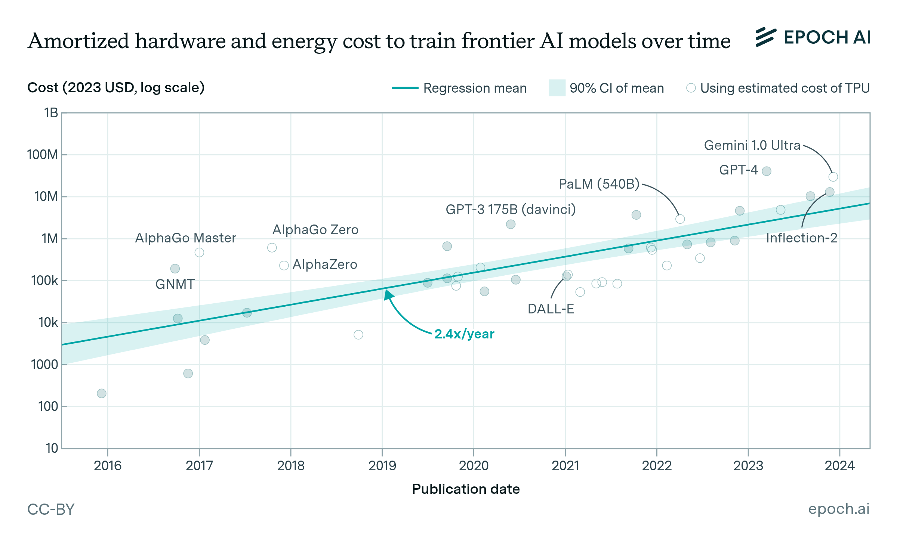
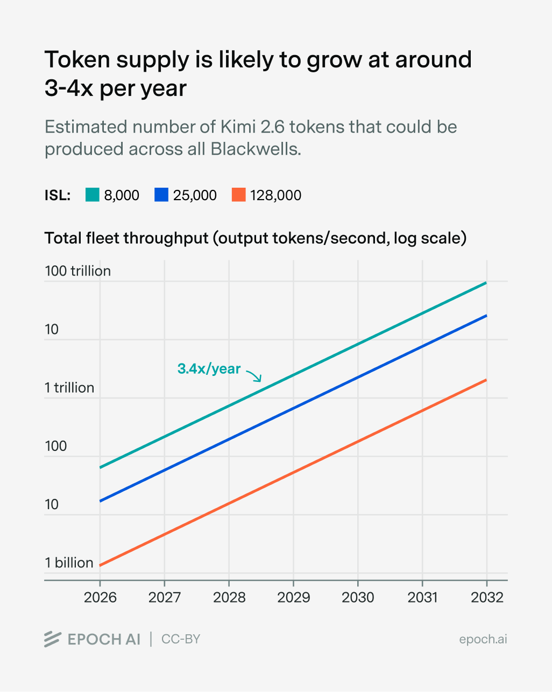
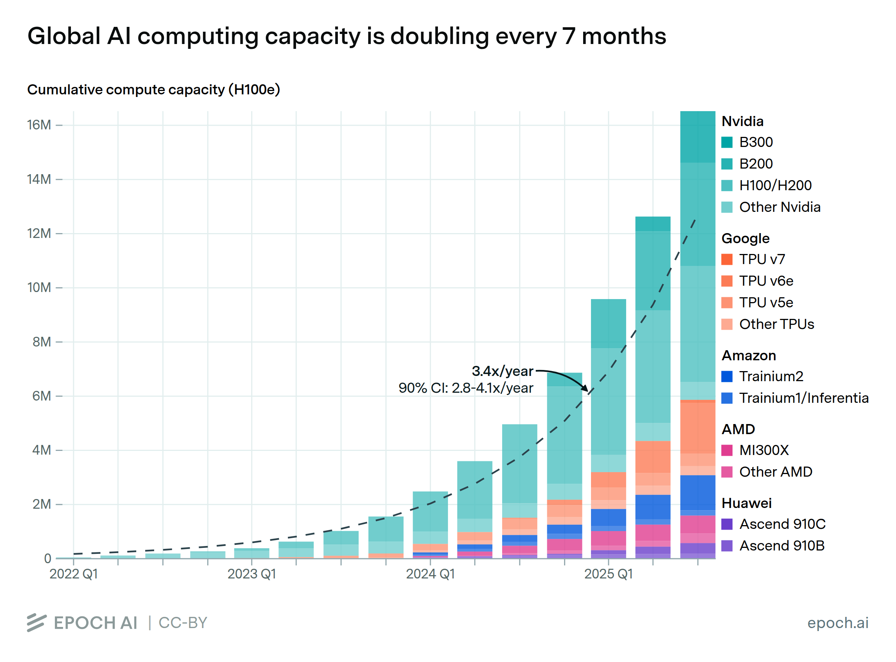
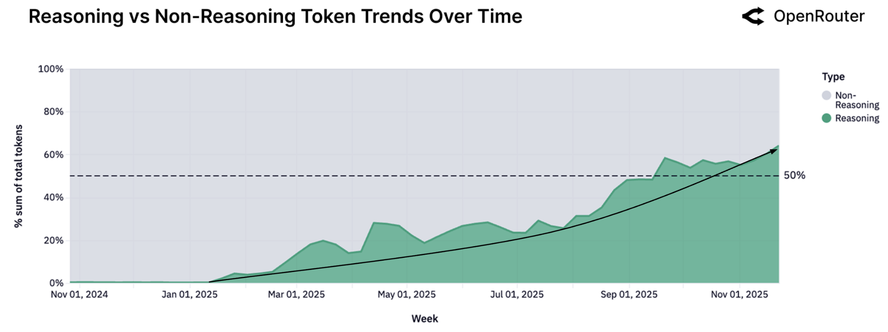
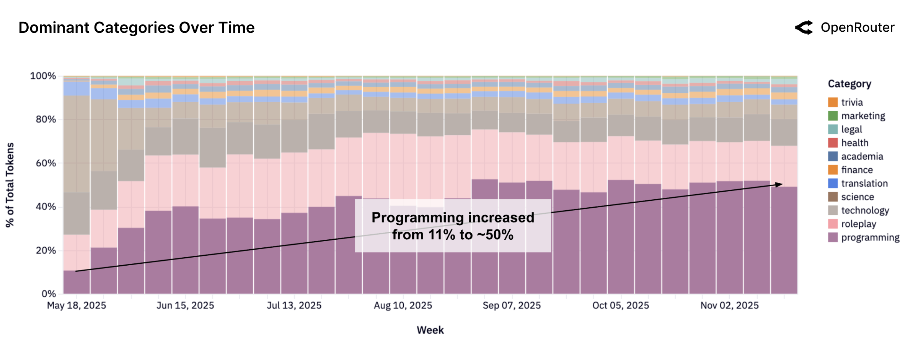
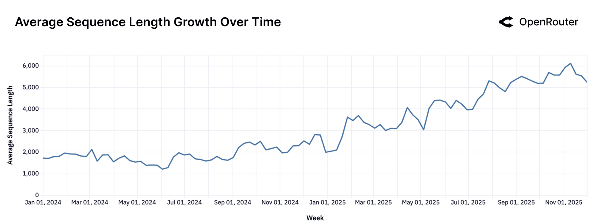

| 阶段 | 编号 | 问题 | 一句话回答 | 状态 |
|---|---|---|---|---|
| 阶段零 · 为什么 | ||||
| 0 | S0 | 为什么研究AI供给？ | 留空，待定义 | 留空 |
| 阶段一 · 定义 | ||||
| 1 | S1 | 用户买AI，买的是什么？ | 智力（通用认知能力） | 已填 |
| 1 | S2 | 凭什么用Token计量？ | 所有任务底层都是token处理，行业已按$/Mtoken定价 | 已填 |
| 1 | S3 | 怎么理解Token衡量智力？ | 质量×数量：模型档次×Token | 已填 |
| 1 | S4 | Token产能怎么分析？ | 分训练（质量）和推理（数量），重点看推理 | 已填 |
| 1 | S5 | 用什么基准衡量推理产能？ | 活跃线程（1M上下文）= AI的"人·时" | 已填 |
| 阶段二 · Token物理成本 | ||||
| 2 | S6 | 推理token怎么占用硬件？ | KV cache持续占HBM，员工笔记=KV向量 | 已填 |
| 2 | S7 | KV cache怎么算？ | GQA/MLA/CSA+HCA三条公式，V4 Pro仅0.007 MB/token | 已填 |
| 2 | S8 | 服务1个1M任务的完整物料清单？ | 权重+KV+激活+系统，V4 Pro并发1,121 vs Llama 16 | 已填 |
| 阶段三 · 从单机到全球 | ||||
| 3 | S9 | 一台NVL72能同时服务多少？ | 6约束取最小值，前沿闭源约30/60/120条 | 已填 |
| 3 | S10 | 全球有多少台等效AI机器？ | 电力反推，8.8万-11.4万台NVL72等效 | 已填 |
| 3 | S11 | 其中多少用于推理？ | 推理占比50-70%，4.4万-8.0万台 | 已填 |
| 3 | S12 | 全球推理供给上限？ | 132万-960万条，分三层（前沿紧/混合中/轻量宽） | 已填 |
| 阶段四 · 需求侧 | ||||
| 4 | S13 | 需求到底是什么，怎么和供给比？ | token/day不够，必须折成NVL72机器数 | 已填 |
| 4 | S14 | 全球每天大概跑多少token？ | 四路交叉验证收敛，100-300T tokens/day | 已填 |
| 4 | S15 | 怎么把token翻译成机器数？ | 任务有轻重，同一台NVL72差100倍(89万vs1.4万tokens/s) | 已填 |
| 4 | S16 | 折成机器数，和供给比什么结论？ | 需求0.8万-6.9万台 vs 供给4.4万-8.0万台，静态快照 | 已填 |
| 阶段五 · 审计与结论 | ||||
| 5 | S17 | 结论的边界是什么？ | 六项假设边界 + 六项需求低估审计 | 已填 |
| 5 | S18 | 过剩在哪？不足在哪？ | 三层定位 + 四个已知未知 + 结论 | 已填 |
| 源文件 | 章节 | 内容 | → 目标 | 状态 |
|---|---|---|---|---|
| Token物料清单_从智力到硬件.html（1047行） | ||||
| 物料清单 | §1 | 为什么智力=Token + API定价卡 | S1 + S2 | ✓ 已内化 |
| 物料清单 | §2 | 为什么Token分训练和推理 | S4 | ✓ 已内化 |
| 物料清单 | §3 | 训练1个Token消耗多少硬件（6N公式+表格） | S4（保留结论+数据卡，丢弃详细表格） | ✓ 已内化 |
| 物料清单 | §4 | 推理1个Token占多少硬件（KV cache公式+6模型表） | S6-S8 | ✓ 已内化 |
| 物料清单 | §5 | 从1个Token到1座数据中心（溯源链） | S9 + S11 | 待内化 |
| 物料清单 | §6 | 训练 vs 推理对照表 | S4 附录或丢弃 | 待内化 |
| AI供给研究_从能力到硬件.html（1530行） | ||||
| 从能力到硬件 | Core Ref | 五因子公式 + NVL72基准 + BOM表 + 并发容量 | S5 + S9 | ✓ 公式已提取 |
| 从能力到硬件 | Part I | 问题推导链 Q0-Q5（定义→Token） | S0-S2（重叠，已覆盖） | ✓ 已覆盖 |
| 从能力到硬件 | Part II §1 | 为什么智力=Token + 定价卡 | S1-S2（重叠） | ✓ 已覆盖 |
| 从能力到硬件 | Part II §2 | 为什么分训练和推理 | S4（重叠） | ✓ 已覆盖 |
| 从能力到硬件 | Part II §3 | 训练1个Token（6N公式+完整BOM表） | S4（重叠，有更详细数据） | 待比对 |
| 从能力到硬件 | Part II §4 | 推理1个Token（KV cache公式+HBM三层+6模型表+溯源链） | S6-S8 | ✓ 已内化 |
| 从能力到硬件 | Part II §5 | 从1个Token到1座数据中心 | S9-S13 | 待内化 |
| 从能力到硬件 · 6张讲解板（素材/AI供给研究/） | ||||
| 讲解板 | 图0 | 供给全链路总览：从电力到有效智能产能 | 交接tab 或 S0 | 待分配 |
| 讲解板 | 图1 | 五因子供给公式树 | S3→S4 公式框 | 待引用 |
| 讲解板 | 图2 | Vera Rubin NVL72 硬件拆解 | S5 或 S8 | 待引用 |
| 讲解板 | 图3 | 1M Active Context 的硬件账单 | S8 | 待引用 |
| 讲解板 | 图4 | MLA vs Dense 并发容量 5 倍差 | S8 | 待引用 |
| 讲解板 | 图5 | 双天花板：容量 vs 吞吐 | S7 | 待引用 |
| 讲解板 | 图6 | 从能力到硬件的推导链全景 | 交接tab | 待引用 |
| # | 未知 | 影响 | 应对 |
|---|---|---|---|
| 1 | 闭源模型KV cache架构 | 单token HBM占用可能差8倍 | 三场景估算法（开源锚点+定价/吞吐量反推） |
| 2 | 全球GPU代际混合比 | 不同代硬件HBM容量/带宽差异大 | 用电力反推总HBM，绕开GPU清点 |
| 3 | 用户上下文长度分布 | 同一硬件：0.06x不足 到 206x过剩 | 不猜分布，做参数化：给出短/中/长三档结论 |
| 4 | HBM翻台效率 | 时分复用让实际容量倍增或不变 | 翻台模型 vs 独占模型的区间 |
| 数据类型 | 优先来源 | 标注格式 |
|---|---|---|
| 全球AI用电 | IEA / Epoch AI / Goldman Sachs | [来源, 日期, 口径] |
| 硬件规格 | NVIDIA官方 / AnandTech / ServeTheHome | [型号, 参数, 来源] |
| 模型架构 | 论文 / 技术报告 | [模型, 版本, 参数] |
| 市场数据 | 公司财报 / 分析师报告 | [公司, 季度, 指标] |
| 需求数据 | 公司公开声明 / 第三方测量 | [来源, 日期, 方法] |
| 概念 | 是什么 | 人话 | 用在 |
|---|---|---|---|
| Token | AI处理和生成的最小文本单元。所有AI任务底层都是接收token、生成token。行业按$/M token定价。 | AI世界的“字”。不管让AI写代码还是聊天，底层都是token进出。就像电力按kWh计费，AI按token计费。 | S1-S2 |
| 活跃线程 (1M上下文) |
一个用户任务从开始到结束，持续占用的GPU资源。以1M token上下文为标准衡量单位。 | AI工厂里的一个“工位”。被一个任务占着，任务不结束就不能给别人用。活跃线程数 = 工厂能同时开多少工位。 | S5 |
| KV cache | 推理时每个token生成的Key和Value向量，驻留GPU显存直到会话结束。推理占用硬件的主要机制。 | AI处理对话时积累的“工作笔记”。对话越长笔记越厚，占的桌面（显存）越大。笔记不清，新任务就坐不下。 | S6-S8 |
| NVL72 / GB200 | NVIDIA当前代AI服务器平台。72块GPU，13.5TB HBM3e显存，120kW功耗。本文的硬件计算基准。 | AI工厂里的“标准车间”。所有产能计算都折算成“多少个这样的车间”来比较。 | S5,S8-S12 |
| 电力反推法 | 从全球AI用电量（公开数据）反推已部署的服务器数量。路径：电力(TWh) ÷ 8760h ÷ 单机功耗(kW) = 机器数。 | 统计全城有多少工厂，不用一家家去数——看总用电量除以每家工厂的用电量就行。 | S10 |
| 供给矩阵 (三层) |
按负载复杂度分三层（前沿重/混合/轻量）估算供给上限。三层×三场景 = 3×3矩阵。 | 工厂能接多少活取决于活的难度。简单活能接很多，困难活只能接几个。分层报数比笼统说“能接X个”更诚实。 | S12 |
| 概念 | 是什么 | 人话 | 用在 |
|---|---|---|---|
| Token口径差异 | 不同来源对“token”定义不同。API token、消费端token、reasoning token、多模态折算token各有口径。 | 每家公司说的“一件活”大小不一样。Google的包含搜索和办公，OpenAI的只算API。拿来直接比就像拿公里和英里比大小。 | S13-S14 |
| 四路对账 | 四条互不依赖的路径估算需求：A.数流水(token量)、B.数钱(收入反推)、C.看行情(价格信号)、D.标定(DeepSeek全透明样本)。 | 要知道全城一天有多少活，不能只问一家。分别看快递单量、营业额、招工价格、再拿一家全透明小店当标尺——四个数对得上才信。 | S13 |
| 三层负载分类 | 按对硬件的消耗分三层：轻量（翻译/摘要/客服）、前沿（coding/reasoning）、超重（长文档/agent/多轮）。三层消耗差100倍。 | 同样叫“一个需求”，回一封邮件5分钟，做调研报告一周，驻场项目占人几个月。不分层就没法算需要多少人手。 | S15-S17 |
| 有效吞吐 vs 基准吞吐 |
MLPerf等基准测试是实验室最优条件，生产环境要扣路由、冗余、峰值预留、延迟约束等开销。 | 实验室里一个人一天能搬100箱货。真上班要排队、等电梯、午休、处理突发——实际60箱就不错了。 | S16 |
| 四个折扣因子 | 从基准吞吐到有效吞吐的四层折扣：模型重量(2-5x) × 上下文(5-50x) × 延迟(2-5x) × 调度(1.5-3x)，连乘约100x。 | 同一台机器，跑轻量翻译每秒出89万token，跑重型agent只出1.4万。四个因素叠加，同一台机器的“实际产出”差100倍。 | S16 |
| 需求机器数 公式 |
需求机器数 = Σ(某类token/day ÷ 86400 ÷ 该类单台token/s)。将token需求转换为等效机器数，可与供给直接对比。 | 算全城需要多少工人：每种活的总量 ÷ 每天工时 ÷ 每人每秒能干多少 = 需要多少人。按轻/中/重分别算再加总。 | S16-S17 |
| 来源 | 数据 | 口径与盲区 | 用在 |
|---|---|---|---|
| Gartner 2025-05 |
AI服务器全球用电 93-95 TWh |
主流数据中心分析机构。AI专项用电估算，不含通用IT | S10 |
| IEA 2024 |
全球数据中心总用电 485 TWh |
全球口径，包含非AI用途。作为AI用电的上界参照 | S10 |
| NVIDIA 官方规格 | NVL72: 13.5TB HBM3e 72 GPU, 120kW |
厂商自报，最权威硬件参数。本文计算基准 | S5,S8,S9 |
| NVIDIA MLPerf Inference v5.0 |
Llama2-70B 890K / DeepSeek R1 336K / Llama3.1-405B 15K tokens/s |
标准化基准，实验室最优条件。代表性能上界，非生产实际值 | S9,S16 |
| Deloitte 2025 |
推理占比约50% | 行业估算。口径含模糊地带（SFT/RLHF算训练还是推理） | S11 |
| Epoch AI | GPU小时推理份额 历史趋势 |
学术研究，基于公开集群数据。推理占比从25%升至50%+ | S11 |
| 模型论文 DeepSeek/Llama等 |
架构参数 （层数/头数/维度/精度） |
开源模型参数已知。闭源模型部分推测（三场景估算） | S7,S8 |
| 来源 | 数据 | 口径与盲区 | 用在 |
|---|---|---|---|
| 公司披露 | |||
| Google I/O 2025-05 |
≈105T/天，同比7x | 全产品含搜索+办公+多模态折算。最大口径，含非推理用途。“Token”定义与纯推理不同 | S14 |
| OpenAI 2025-03 |
≈21.6T/天 | 仅API，不含ChatGPT消费端。纯推理口径但缺最大流量入口 | S14 |
| 豆包/火山引擎 2025-06 |
180T/天 | 含图/视频/语音折算，构成未拆分。中国最大单体平台 | S14 |
| DeepSeek 2025 |
776B/天，1,814块H800 | 唯一同时公开需求量和硬件配置的样本。规模小但100%透明 | S13 |
| 政府统计 | |||
| 国家数据局 2025-03 |
140T+/天 | 全国汇总，含重复计数可能。政府统计口径，覆盖面广但精度存疑 | S14 |
| 第三方平台 | |||
| OpenRouter × a16z 2025-05, 100T实证 |
4.1T/天，reasoning>50%，seq 2K→5.4K+ | 聚合平台，100%透明但全球占比<2%。偏向开发者群体 | S14+S15 |
| 市场信号 | |||
| Menlo Ventures 2025 |
企业GenAI支出 ~$37B | 投资视角，不直接对应token量。证明付费需求规模 | S13 |
| H100二级市场 2025 H1 |
前沿段全额认购，+40% | 定性价格信号，反映前沿段供需紧张 | S13+S17 |
| 硬件吞吐基准 | |||
| SemiAnalysis InferenceX |
DeepSeek R1 交互约束 59K-417K tokens/s |
含延迟约束，更接近生产环境。仅覆盖部分模型 | S16 |
用户购买 AI 服务时，买的是一种能力——帮我写代码、帮我分析合同、帮我做研究。这种能力的本质是通用认知能力，也就是智力。
写作、编程、推理、翻译、分析、决策辅助、流程执行……这些的共同点是：它们过去只能由人类大脑提供。AI 供给的本质，是机器提供的可规模化的智力。
AI 供给的核心产品不是芯片、不是服务器，是智力。
观察大模型的工作方式：不管任务是什么，底层操作都是同一件事——接收一串 token，生成一串 token。
“帮我写一封邮件” → 读入 20 个 token 的指令 → 输出 200 个 token 的邮件。
“帮我审这份 50 页合同” → 读入 30,000 个 token → 输出 2,000 个 token 的分析。
“帮我做一个数据分析” → 读入 5,000 个 token → 输出 1,000 个 token 的报告。
所有智力输出，无论多复杂，最终都还原为：处理 X 个 input token → 生成 Y 个 output token。Token 就是智力的原子生产/交付单位。
这不只是类比——看看 AI 服务真实的定价方式：
整个行业已经用 $/Mtoken（美元每百万 token）来定价和交易 AI 智力。Token 不只是技术概念，它已经是 AI 供给的工业标准计量和定价单位。
公式已经给出了骨架：质量由训练决定，数量由推理决定。这两个维度背后是两种完全不同的硬件消耗方式——先看训练如何提升质量，再看推理如何产出数量。
训练是创造模型的过程。模型读入海量数据（以万亿Token计），每个Token消耗一次GPU算力（FLOPS），更新模型参数。算完即释放，GPU接着处理下一个。
训练 = 烧算力。瓶颈是GPU的浮点运算速度（FLOPS），不是内存。类比：发动机烧油——油烧完就没了，但发动机本身可以反复使用。
训练是固定成本，一次性投入。训练完成后，同一组模型权重可以服务无限次推理——训练投入不随用户增长而增加。

推理是用户使用模型的过程。模型每生成一个Token，都要把中间计算结果（KV cache）保存在GPU显存（HBM）中，因为生成下一个Token时要回看所有之前的Token。这些缓存持续占用显存，直到会话结束才释放。
推理 = 占显存。瓶颈是GPU的高带宽内存（HBM）容量。类比：车停进车位——车位被占着就不能给别人用，直到车开走。
推理是边际成本，持续消耗。每个用户的每次调用都在占用硬件资源。AI供给的物理天花板取决于：同样的硬件，能同时服务多少推理请求。
S3确认了：购买一个人一小时的时间 = 购买一个大模型+硬件一定时长的占用。S4确认了：推理的本质就是占用——KV cache持续驻留HBM，直到会话结束才释放。
那产能的原子单位就是：一个正在占用着硬件的活跃会话——活跃线程（active context）。
但活跃线程有大有小。1K短对话占几百MB，1M长任务占几百GB。不固定长度，“产能”就不可比——如同说“律所能接100个案子”，不说是离婚协议还是跨国并购，毫无意义。
S3中我们说：买AI = 占用一个大模型+硬件在一段时间内为你工作。这个“占用”在硬件层面的实体，就是KV cache。
每生成一个token，模型都要计算两个向量：Key（这个token的“身份标签”）和Value（这个token携带的信息）。所有已处理token的K和V向量必须保存在显存（HBM）中——因为生成下一个token时，模型需要“回头看”所有前文。
公式核心：每层存多少 × 多少层 = per-token总量。per-token × 上下文长度 = 单线程KV cache。“每层存多少”由注意力架构决定——这是不同模型间差异的根源。
| 模型 | 参数量 | 注意力 | MB/token | GB @1M | 意味着 |
|---|---|---|---|---|---|
| DeepSeek V4 Pro | 1.6T / 49B | CSA/HCA | 0.007 | 7 | ≈1/2 块 GB200 |
| GLM-4-32B | 32B dense | GQA-2 | 0.062 | 62 | ≈1/3 块 GB200 |
| DeepSeek V3 | 671B / 37B | MLA | 0.070 | 70 | ≈1/3 块 GB200 |
| Qwen3-235B | 235B / 22B | GQA-4 | 0.193 | 193 | 1 块 GB200 |
| Qwen2.5-72B | 72B dense | GQA-8 | 0.328 | 328 | ≈2 块 GB200 |
| GLM-4.5 | 355B / 32B | GQA-8 | 0.377 | 377 | ≈2 块 GB200 |
| Llama 3.1 405B | 405B dense | GQA-8 | 0.516 | 516 | ≈3 块 GB200 |
S7解决了KV cache的大小。但完整的推理线程不只需要KV cache——模型权重本身要常驻HBM，还有激活内存和系统开销。如同雇一个员工不只需要桌子放笔记（KV cache），还需要整个办公基础设施：电脑、工具、办公室空间（权重+激活+系统）。
| 模型 | 权重(GB) | KV@1M(GB) | HBM总需 | NVL72并发 | 瓶颈 |
|---|---|---|---|---|---|
| V4 Pro (FP8) | 1,600 | 7 | 1,607 | ~1,121 | 权重 ≫ KV |
| GLM-4-32B | 64 | 62 | 126 | 151 | KV ≈ 权重 |
| DeepSeek V3 | 1,342 | 70 | 1,412 | 115 | 权重 ≫ KV |
| Qwen3-235B | 470 | 193 | 663 | 46 | 权重 > KV |
| Qwen2.5-72B | 140 | 328 | 468 | 28 | KV ≫ 权重 |
| GLM-4.5 | 710 | 377 | 1,087 | 23 | KV ≈ 权重 |
| Llama 3.1 405B | 810 | 516 | 1,326 | 16 | KV > 权重 |
| 硬件层 | NVL72规格 | 推理角色 |
|---|---|---|
| GPU (GB200) | 72颗, FP8 2,500 TFLOPS/颗 | 矩阵乘法、Attention计算 |
| HBM (显存) | HBM3e, 192 GB/GPU, 共13.5 TB | 存放权重 + KV cache — 产能天花板 |
| NVLink 5 | 1.8 TB/s/GPU, 72 GPU全互联 | 多GPU间传输张量分片 |
| CPU + DRAM | Grace CPU, 共~5 TB DDR5 | 调度、tokenize、模型加载中转 |
S8算的是天花板——只看HBM能放下多少个KV cache。但“放得下”不等于“跑得动”。要逐个检查其他约束，看谁先卡住。
| 约束 | 问什么 | 判断 |
|---|---|---|
| HBM容量 | KV cache + 权重放得下吗？ | 天花板，S8已算：26–144条（前沿闭源约30–60） |
| HBM带宽 | 同时输出时读得动KV吗？ | 中低速输出通常不是第一瓶颈 |
| Prefill算力 | 1M输入能快速启动吗？ | 交互式会扣，取决于长上下文优化 |
| Decode算力 | 持续输出时算力够吗？ | 低/中TPS弱扣 |
| 互联通信 | 多GPU传数据够快吗？ | NVL72的NVLink通常够用 |
| 延迟要求 | 用户能等多久？ | 越紧越扣，把物理上限打成可售供给 |
GPU库存不透明：NVIDIA不公布各客户出货量，云厂商不公布部署状态，二级市场交易不可追踪。电力是唯一公开、可交叉验证的物理口径——机器只要通电就会被电网记录。
| 数据 | 数值 | 来源 |
|---|---|---|
| 2025 AI-optimized servers用电 | 93-95 TWh | Gartner 2025-11 |
| 上修口径（含更宽AI相关用电） | ~120 TWh | 估算 |
| NVL72机架功耗（计算） | 120 kW（含冷却约132kW） | NVIDIA官方 |
| 路径 | 输入 | 结果 |
|---|---|---|
| 主路径 | Gartner AI servers 93-95 TWh | 8.8万-9.0万台 |
| 交叉验证 | IEA总数据中心485 TWh × AI占比21-25% | 8.9万-11.5万台 |
| 上修 | 更宽AI相关用电 ~120 TWh | 11.4万台 |
AI服务器有三种用途：训练新模型（占用大量GPU数月）、推理服务用户请求（产出token）、研发实验（调参/评测/安全测试）。只有推理服务才产出用户可用的token，所以供给分析只算推理部分。
| 来源 | 推理占比 | 口径 | 时间 |
|---|---|---|---|
| Deloitte TMT | 1/2(2025) → 2/3(2026) | 算力用途分配 | 2026预测 |
| Gartner | 55%(2026) → 65%(2029) | IaaS支出占比 | 2025-10发布 |
| Epoch AI | ~60%(2024-2026) | 算力分配（含实验） | 研究估算 |
| 30条/台（前沿重模型） | 60条/台（工作口径） | 120条/台（轻量/优化） | |
|---|---|---|---|
| 4.4万台（保守） | 132万 | 264万 | 528万 |
| 6.2万台（中值） | 186万 | 372万 | 744万 |
| 8.0万台（上修） | 240万 | 480万 | 960万 |
| 负载类型 | 供给区间 | 含义 |
|---|---|---|
| 前沿重模型（Opus级，30条/台） | 132万-240万条 | 参数大、KV重，供给偏紧 |
| 混合负载（工作口径，60条/台） | 264万-480万条 | MoE + 中端模型，供给适中 |
| 轻量/优化（MLA+缓存，120条/台） | 528万-960万条 | KV优化到位，供给宽裕 |


行业衡量AI需求，最常见的指标是每天处理多少token——Google、OpenAI、字节跳动都在用这个口径报数。这比用户数和收入更接近真实工作量：
| 指标 | 为什么不适合做供需比较 |
|---|---|
| 用户数 | 一个闲聊用户和一个coding agent对机器消耗差100倍 |
| 收入 | 价格在变（降价10x不代表需求降了10x） |
| API调用量 | 不含消费端（ChatGPT 700M周用户不走API） |
供给侧（S1-S12）已经统一成NVL72等效机器数：4.4万-8.0万台。token/day不能直接和"台"比较。所以需要一个公式把token/day翻译成机器数：
| 主体 | 数值 | 口径 | 来源 |
|---|---|---|---|
| Google全产品 | ~105T/天（3.2Q/月） | 全产品含多模态，同比7x | I/O主旨演讲 2026-05 |
| OpenAI | 21.6T/天（150亿/分钟） | 仅API，不含ChatGPT消费端 | 融资公告 2026-03 |
| 豆包 | 180T/天 | 含图/视频/语音折算，构成未拆分 | 火山引擎大会 2026-06 |
| 中国全国 | 140T+/天 | 全国词元调用量 | 国家数据局 2026-03 |
| OpenRouter | 4.1T/天 | 聚合平台，同比12x | 平台公开榜 2026-05 |
| 路径 | 逻辑 | 结果 |
|---|---|---|
| A 数流水 | 各家披露的token/天加总修正 | 全球文本推理 150-350T/天 |
| B 数钱 | token类收入$45-65B/年 ÷ 混合单价$0.4-1.5/M | 付费需求 82-445T/天 |
| C 看行情 | 租赁市场价格与空置率反推 | 前沿段有效供给已被全额认购 |
| D DeepSeek标定 | 唯一全透明样本：776B/天 ÷ 1,814块H800 | = 4.3亿token/卡/天（MLA最优上锚） |
四路重叠区间约150-350T/天。采用100-300T/天作为保守工作区间。
普通聊天、coding、reasoning、agent、1M长上下文不是同一种负载。如果用一个平均值除，轻活高估需求、重活低估需求，结论失真。所以必须把任务分层，给每层一个不同的分母。
| 模型 / 场景 | 单台NVL72 tokens/s | 代表负载 |
|---|---|---|
| Llama2 70B（短context） | 750K-890K | 轻量：翻译、摘要、短问答 |
| DeepSeek R1（MoE reasoning） | 240K-336K | 前沿：coding、多步推理 |
| Llama3.1 405B（长context） | 14K-15K | 超重：长文档分析、agent |
分母取什么值，取决于全球token的轻重构成。当前证据显示token正在系统性变重——这意味着分母在变小，同样的token/day需要更多机器：
| 趋势 | 数据 | 来源 |
|---|---|---|
| Reasoning token占比已过50% | 从接近0 → >50% | OpenRouter×a16z 100T实证 |
| Programming token占比 | 11% → >50% | 同上 |
| 平均sequence length | ~2K → 5.4K+ | 同上 |



这是全链的汇合点。供给链（S1-S12）用12个问题推到"全球有4.4万-8万台推理机器"；需求链（S13-S15）用3个问题推到"分子100-300T/天，分母按轻重分层"。现在代入公式。
需求机器数 = token/day ÷ 86400 ÷ 单台有效token/s：
| 单台有效token/s | 代表负载 | 100T/天 | 300T/天 |
|---|---|---|---|
| 150K | 轻量/一般API | 0.77万 | 2.31万 |
| 100K | 中等API/coding | 1.16万 | 3.47万 |
| 50K | 前沿reasoning/agent | 2.31万 | 6.94万 |
| 15K | 超重长上下文 | 7.72万 | 23.1万 |
用API/开发者级别的50K-150K校准：当前需求 ≈ 0.8万-6.9万台。对比供给 4.4万-8.0万台。
数学与市场信号一致：前沿段GPU全额认购，H100合约价半年+40%——"总量松、前沿紧"有价格佐证。
S16给出静态对照：供给4.4万-8.0万台推理NVL72，需求按三种场景约0.67万-3.74万台。表面看供给约为需求的2-12倍。但这个快照依赖六个前提假设，每个都可能改变结论。
| 边界假设 | 为什么重要 | 忽略后果 |
|---|---|---|
| token结构 | 同样100T token，轻量聊天和前沿reasoning/长上下文agent的机器消耗差10-50倍 | 低估重token的供给压力 |
| 峰值vs平均 | 当前用日均token/day，但体验看高峰时段是否排队 | 平均够用但高峰拥堵 |
| 供给增速 | 新增机器、电力释放、单机效率提升改变供给面 | 只看今天，错过明年供给释放后的变化 |
| 需求增速 | 用户增长、频率提升、agent化和工作流改造推动增长 | 低估未来token消耗 |
| 价格和毛利率 | 物理上够不够 ≠ 经济上是否赚钱 | 看见“供给够”但资本回报不足 |
| 潜在需求 | 当前token/day是已满足需求，非全部潜在需求 | 忽略被价格、速度、产品形态压住的需求 |
| 低估来源 | 证据与影响 | 判断 |
|---|---|---|
| token/day可能偏低 | 如果全球总量更接近300T-600T/day，需求机器数同步翻倍 | 可能低估 |
| 有效token/s可能偏高 | 真实工作负载更接近50K-100K而非300K，前沿推理可能15K-50K | 可能低估 |
| token结构正在变重 | prompt从~1.5K升至6K+，coding agents放大消耗 | 明确上修风险 |
| 已满足<潜在需求 | 算力约束、限额管理、价格门槛压住部分需求 | 可能低估，不能直接加入静态需求 |
| 非API/私有部署漏算 | Google全产品、企业私有部署、中国生态不被API数据捕捉 | 方向上低估，不能机械加总 |
| 需求高峰未计入 | 日均值低于峰值需求，高峰期排队/降速/限额 | 局部低估，影响体验和冗余 |
审计结论：六项边界中，token结构、有效token/s、潜在需求三项最可能上修需求。S16的区间（0.67万-3.74万台）更可能是下限而非中线。后续最优先研究token结构——它决定同样的token/day到底除以300K-900K还是15K-50K。
把S17的边界审计结论代入S16的框架。供给侧4.4万-8.0万台推理NVL72不变，需求侧按不同负载层分别定位：
| 负载层 | 吞吐特征 | 相对供给(4.4-8万) | 定位 |
|---|---|---|---|
| 轻量/中等 | 750K-890K tokens/s，大量token低成本消化 | 需求远低于供给 | ● 明显宽裕 |
| 前沿reasoning/agent | 50K-150K tokens/s，token变重后主要消耗集中 | 需求与供给区间重叠 | ● 接近平衡 |
| 超重/1M长上下文 | 15K-50K tokens/s，少量token高成本消耗 | 压力口径可能超出供给 | ● 局部紧张 |
关键判断：轻量token供给宽裕不是因为供给太多，而是因为高吞吐下每台机器能消化大量token。前沿reasoning/agent层在S16场景C（压力测试）下需求可达3.74万台，与供给4.4万-8.0万已有重叠；如果S17的上修风险兑现，这一层可能从“平衡”滑向“紧张”。超重长上下文是最脆弱的——即使只占5-15%的token，低吞吐意味着需要大量机器。
供需研究结论：当前全球AI推理供给不是绝对过剩，也不是绝对短缺，而是分层分段的结构性状态。总量表面宽裕掩盖了前沿和长上下文的局部紧张。这个判断的有效期取决于上述四个变量的演变速度。后续Q3-Q4研究将从这里出发，进入“系统性脆弱性”的定性分析。